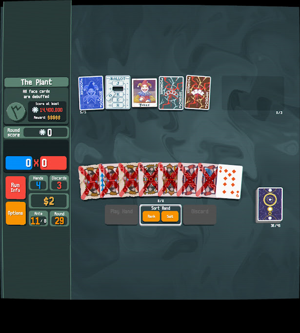
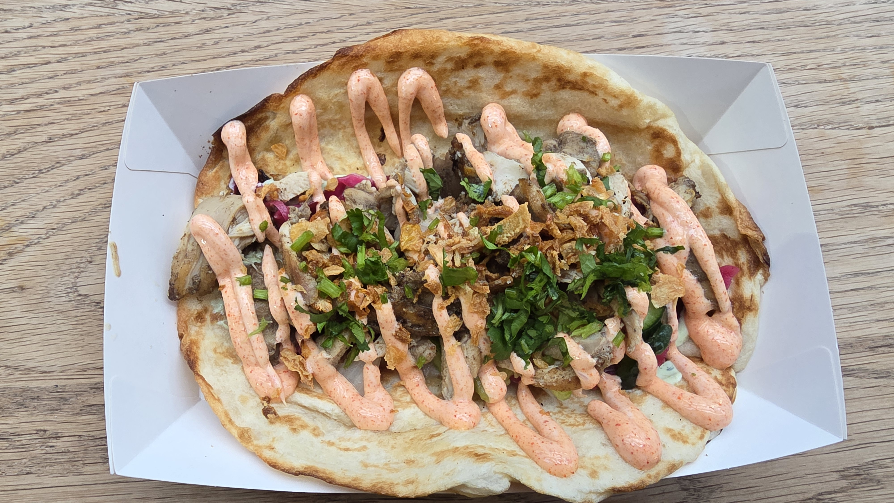
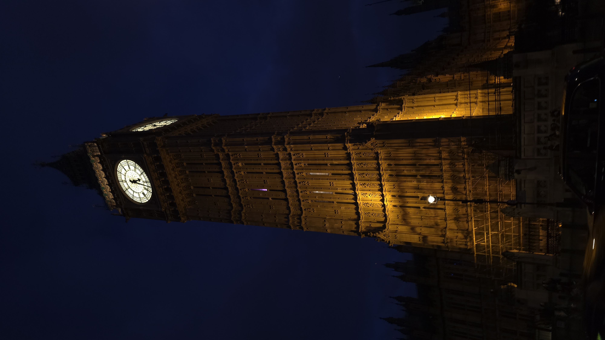
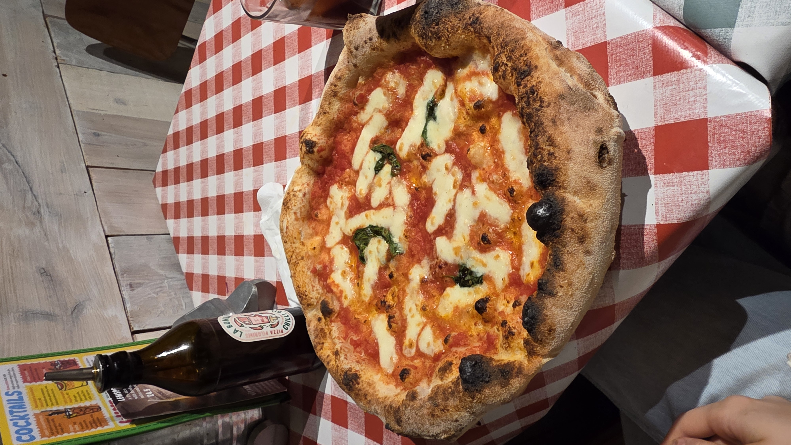
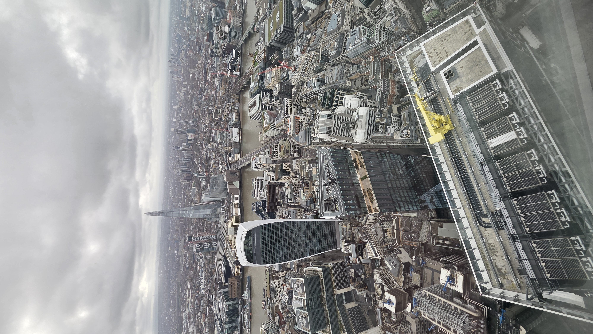
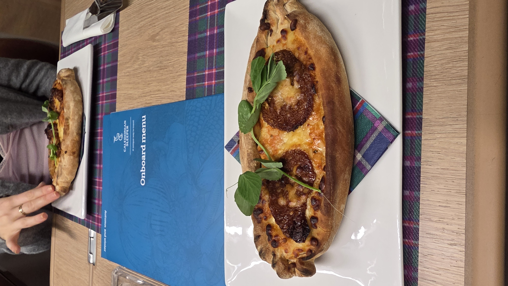
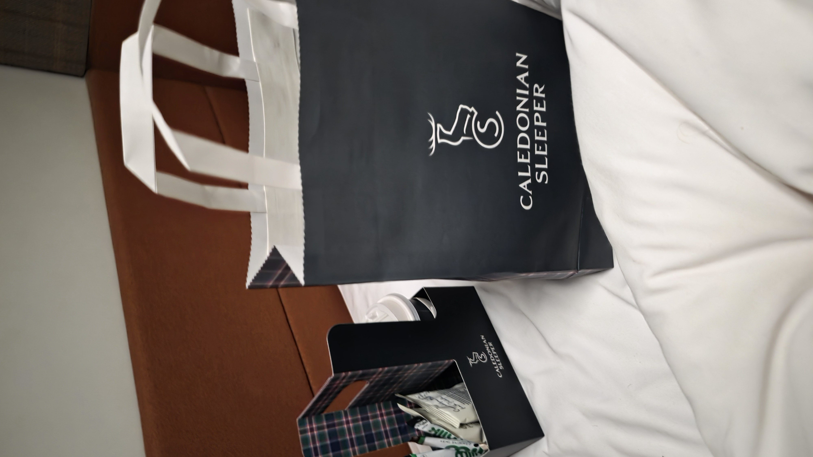

london: luxury and regret
14 October 2025
in early february 2026, I went to london with my girlfriend annie. we went down on an overnight sub £20 flixbus, and came back on a train somewhere around 10 times that, per person. now we all know trains in the uk are expensive, and this isn’t me having a moan, although it is ridiculous, though this train was no regular train, not lner, not lumo, or god forbid… crosscountry, eugh. this train was the caledonian sleeper which is operated and massively subsidised by the scottish government (despite what the price may have you believe). the sleeper is a rare breed in the uk these days, with only 2 existing. though counting both the night riveria and caledonian sleeper as “one” entity is sort of silly, as unlike the night riveria which travels from london to penzance, and is much more similar to your typical continental sleeper train, the caledonian sleeper is a sort of deluxe service first “hotel-on-wheels” which operate two distinct routes, the “highlander” and “lowlander” services, with 5 different termini: edinburgh, glasgow, fort william, aberdeen, and inverness. however, let’s not get ahead of ourselves here, as first of all, there was a flixbus in the way between us and abject hedonism.
picture the scene, it’s a bit past 10pm, and the bus leaves at 11:40, almost midnight, I am packed and me and annie are watching something on netflix. then her mum texts, asking when we need a lift to the coach station, I confidently pull out the ticket and say 11:40, annie, then inspecting the phone notes that it actually says “22:40”, or about half an hour from the current time. now normally this isn’t great to see, and it was less great to see once you realise it takes about half an hour to drive to the bus station from her house, and that she was not yet packed. chaos ensues. eventually after some speed packing, self shame, and luck with traffic, we were at the bus station with some time to spare but not tonnes, enough for annie to use the toilet but not me, as the bus stood infront of us by the time she got out of the toilet. I have been on flix buses before and so it was all familiar, albeit a bit more daunting as we actually had to have tickets and not just use our young scots, so after the feelings we were doing something we shouldn’t be passed, we hopped on the big, beautiful, green bus. the ride down is and was a blur, shutting eyes but not sleeping, that inbetween stage of awake and asleep, the surprising quietness of the coach, and ultimately restless resignation. for some reason at one minute before midnight I took a selfie in the coach toilet, and after that? a screenshot of a failed balatro run at 1am. from there on I just played balatro until I could see london, which was a long, long 5 hours.

we arrived a bit past 6:20 which was about 40 minutes early, which would normally be great! but not when you’re wrecked and relying on someone else to be awake to open the door for your accomodation. after changing in the victoria coach station toilets and doing my best not to touch the floor, we were on our way, deptford here we come. we then took the underground briefly into central london, where we sat and ate our slightly warm meal deals from the night prior inside of cannon street station, before walking on towards the dlr which would ultimately take us to our destination, and after trying to get in for around 30 minutes and realising no one was up, we were left with the humbling task of waking someone up to come and get us – we were staying at annies brothers flat, and therefore had to potentially wake up a complete stranger to let us in, and after we eventually did and were given a brief tour, we unceremoniously fell asleep on the couch for about 2 hours, before moving to her brothers bed and then falling asleep for another hour or so.
after having some sleep in us, we went back into central london to actually do some things, number 1 on the agenda being spitalfields market, where I got a very nice and very nice looking kebab. after this we went to the british museum where we stayed for maybe 20 minutes as our feet were sore, we were tired, and it was busy. overall it was a pretty good first day and first impression, as I had never been to london proper before, only some of the airports. the food was nice and the architecture suprisingly continental, and we were tired.

on the second day we went on the cable cars (thanks boris!) which were quite nice, although sort of in the middle of nowhere, and exposed me to people on the bus with posh london accents which was sickening, we (and by we I mean I) accidentally stole a pretzel from a tesco because there was no way to code it in for some reason, and yes, I checked the manual bit. after the toe dip into larceny we were just walking around and accidentally ended up bumping into some very cool-looking buildings that had projections and mirrors everywhere, seemingly advertising something. after that we wandered around the west end, chinatown, and then went into a pizza place and got by far the best kind of pizza (napoli) and then wandered around hyde and kensington park. I then saw big ben for the first time in my life, which I somehow never realised was attached to the houses of parliament.


on the third day we went back to bank, which has this strange contrast going on, of an old greco-roman style building surrounded by glass skyscrapers and offices. our intentions were to visit horizon 22, the 2nd tallest building in the uk, and the highest viewing platform in the uk, which for some reason doesn’t let under 18s in, but after a security guard asked us at the door and we answered with a “uh”, he then very kindly just side-nodded as if to single “go in” which was very kind of him. inside you wait in a queue before going through an almost airport security style bag and body scanner, before taking a slightly packed lift straight to the top, and it really was impressive, you could see all the way to croydon, the houses of parliament, and the isle of dogs, it was great and free! afterwards we walked through the obnoxiously busy borough markets towards a local hidden gem… a nandos. but to be fair, a pretty nice nandos which was by the coast and with a view of the shoreline of the thames… if you were sat by a window, which we weren’t. not letting this get in our way we then headed off, towards buckingham palace, which was honestly a bit underwhelming, I much preferred the peruvian embassy, which had a toy bear paddington in its window. afterwards we went to the v&a which is like the one in dundee if it was a million times larger and full of massive archways and marble statues, all in all it was pretty cool! additionally I had a massive streak of luck wandering around london late at night, as I found a tourist shop that had a ton of things I wanted at once that I had been searching for before and couldn’t find 1. a good magnet 2. a good tshirt and 3. import drinks, which is a bit of a weird interest of mine, I ended up getting a korean fanta, a japanese fanta, and an american fanta. fantastic. but after this was where the real fun began… the walk to london euston, in preparation for the train of a lifetime.

once in euston and navigating to the private lounge where it felt like we absolutely shouldn’t have been, it was amazing. free everything. there was a minibar style bit in one corner of the lounge after we we got our room key, which was filled with cans of coke, fanta, etc… and a hotel breakfast style section with apple and orange juice. needless to say, after about 4 cokes and another 3 in my bag, I was fulfilled alongside this there was various cakes and small traybakes which was a nice touch. due to our premier status as we had a double bed room en-suite, we were allowed to board an hour before departure, in which I wasted no time going to the club car to have a quick bite, although the menu was a bit disappointing, as it was mostly alcohol which isn’t great when you’re under 18. we both ended up having a sourdough pizza thing which was a bit overdone and honestly wasn’t that nice, but it was the experience that counts. after that we headed straight to the room on our bed was a little gift box with fudge and chocolate as well as take-away toiletries (which are still sitting in their box in my room as of june 2026), and filled out our breakfast form, with us both wanting room service and a full scottish, before getting settled and checking out the shower and bed. the shower was alright, you had to continuously press it every 12 or so seconds or it would stop, similar to some showers at campsites, but the novelty alone of it being on a train, and therefore YOU showering on a train outweighed it.

now the issues began. the bed was lovely, genuinely, a full size double bed, but I don’t know if it was the constant sideways motion as you sleep sideways, or the fact I had 5 cokes and an obnoxious amount of food, but I just couldn’t sleep. at all. annie didn’t fare much better but she blamed the toilet door which was sort of half open and would sometimes swing as it wouldn’t shut properly, as well as me, so much like on the way down, I sat half-awake, watching youtube, playing balatro, and looking out the very very dark window for any single perceivable thing to beat the tiredness. around 20 to 7 we got a knock on the door and received our breakfasts which was, so, so yummy, and in a little cardboard box. I chose a hot chocolate for my drink and I will say, the feeling of looking out at haymarket with a hot chocolate in my hand whilst in our own bedroom in a train was very cool. after this we also had late-leave privileges due to our fancy room, we didn’t need to leave until 8am, where as everyone else had to go at 7:30 (when the train stops). we sat in bed at waverley for a bit with our window open and then promptly shut it before we changed as there was someone sitting directly in our line of sight across the platforms, and then we left! it was over but it was very lovely, and honestly? I’d say more than worth it, I’ll get a bit more detailed in a second.


for our room, the caledonian double en-suite we received so many things, the lounge access, breakfast, the little gifts in our room, the novelty of it all, and the fact that we even could do it at all was fantastic, as non train-based hotels generally do NOT accept anyone under the age of 18, so doing this at 16? was very very nice. now, the price would normally be £495, which is yes, very expensive, however we only paid £333.75, which once you divvy between two people, is only ~£170, which if you think about a fancy hotel plus the price of all the free stuff? it would probably come out similar. the sale is annual I think, with 15-33% off, in our case it was book in december for travel in january or february. I believe it was expensive, but a fair price for what you get, and I believe the flixbus was cheap, but also a fair price for what you get, coming in at just £17.50. however, there are some things to note. the prices for london-edinburgh, starting with the cheapest is £260 for 1, or £350 for 2, the “classic” which is a bunk bed with no toilet, the next step up is the “club en-suite” which is £345 for 1 or £440 for 2, and finally, the “caledonian double en-suite” at £410 for 1, and £495 for 2. keeping this in mind, unless you really want a double bed, which is fair! I would never go for the classic, I would always go for the club en-suite, as although it is about £100 more expensive, it comes with all the same benefits as the double room, i.e. the lounge, late and early boarding and departure, free breakfast, and more, which all really feel like integral parts of the experience to me and well worth the extra money. if i was to say what the best journey is in terms of price/quality it would probably be london to fort william, as it is the longest journey, boarding starting at half 8 instead of almost midnight, and room vacation by 10, makes it a lot more hotel-y, and means when you’re woken for breakfast it’s not 20 to 7 (earliest for london-edinburgh) and you’re not in the city, it would be a more reasonable time, and you’d wake up literally in the highlands, having a good minute where your bedroom is also just a room, that you can sit and watch the hills and trees go by in, which sounds very nice! (though it is around £60-80 dearer than london-edinburgh, I think it would be worth it, even if afterwards you just travel home)
to conclude, london was a lot nicer than I thought (no offence) and the caledonian sleeper was as nice as I thought it would be, and the flix bus was as bad as I thought it would be, but they both got us to our destination in good time and one piece, and both just as tired as the other (I fell asleep on the bus back to annie’s house after the caledonian sleeper).